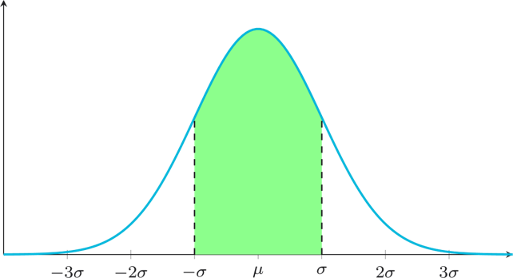
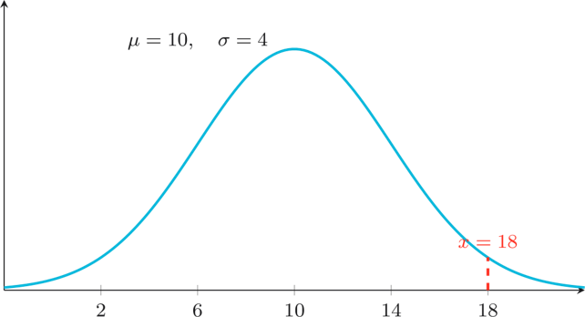
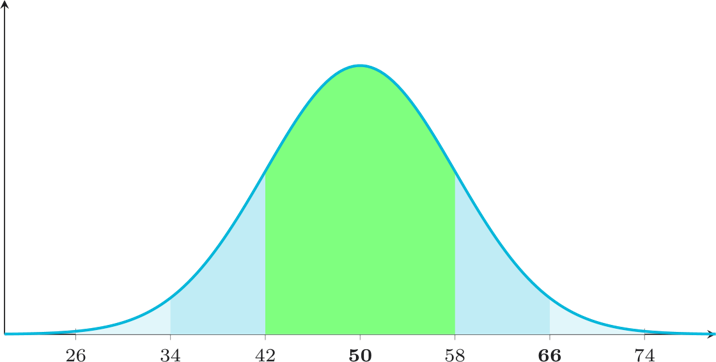
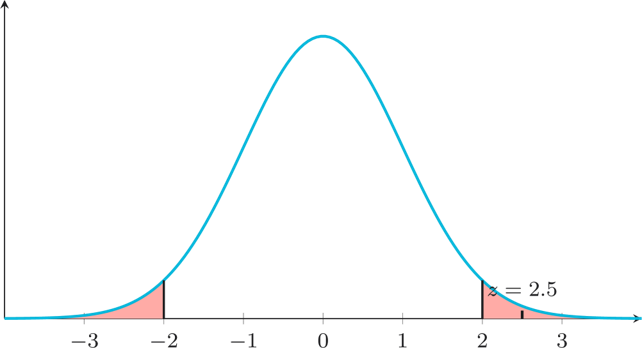
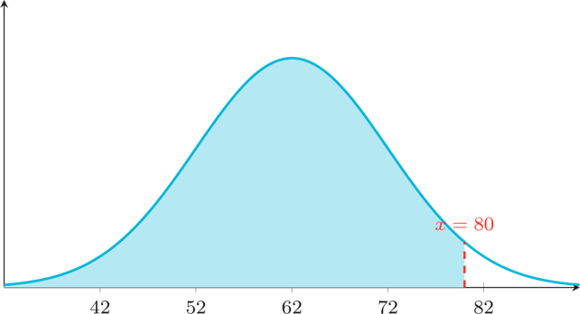
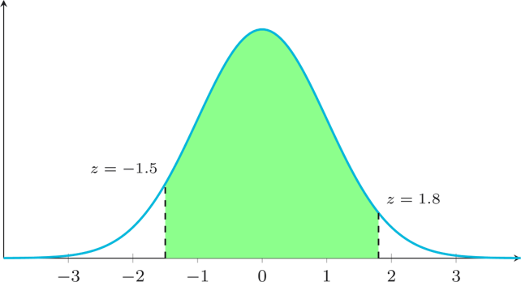

Bell Curve Bureau
Nine challenges on the Normal Distribution, the Empirical Rule (68-95-99.7), z-scores, and using the z-table. Drawn from Week 5.
Empirical rule & first z-scores
10 points eachThe 68 Slice
The diagram below shows a normal distribution. What percentage of data falls within the shaded region? Read the value directly from the diagram and enter it as a whole number.

Three-Sigma Sweep
Approximately what percentage of data falls within 3 standard deviations of the mean in a normal distribution? Enter the percentage (e.g. 99.7).
Zero to Z
The diagram below shows a normal distribution with the marked value of $x$ indicated. Read $\mu$, $\sigma$, and $x$ from the diagram, then calculate the $z$-score.

Ranges, z-scores, and classification
20 points eachTop of the Range
The diagram below shows a normal distribution with parameters marked. Find the upper bound of the 95% range by computing $\mu + 2\sigma$ using the values shown.

Under the Mean
Student heights are normally distributed with $\mu = 170$ cm and $\sigma = 8$ cm. A student is 158 cm tall.
Calculate this student's z-score.
Usual Suspect
The diagram shows a standard normal distribution. A value is highlighted. Using the classification rule from class, examine where the marked value falls relative to the shaded regions. Is this value usual, unusual, or rare?

Z-table probabilities & reverse calculations
30 points eachLeopard's Range
The diagram shows the distribution of a leopard's weekly walking distance. Read $\mu$, $\sigma$, and the boundary value from the diagram. Compute the $z$-score, look it up in your z-table, and find $P(X < $ boundary$)$. Round to 4 decimal places.

Middle Passage
The diagram shows a shaded region of the standard normal distribution. Read the two z-boundary values from the diagram.
Use these to find the probability of the shaded region. Round to 4 decimal places.

Z in Reverse
For a normal distribution with $\mu = 60$ and $\sigma = 10$, a value has z-score $z = 1.5$. Find the corresponding value of $x$.